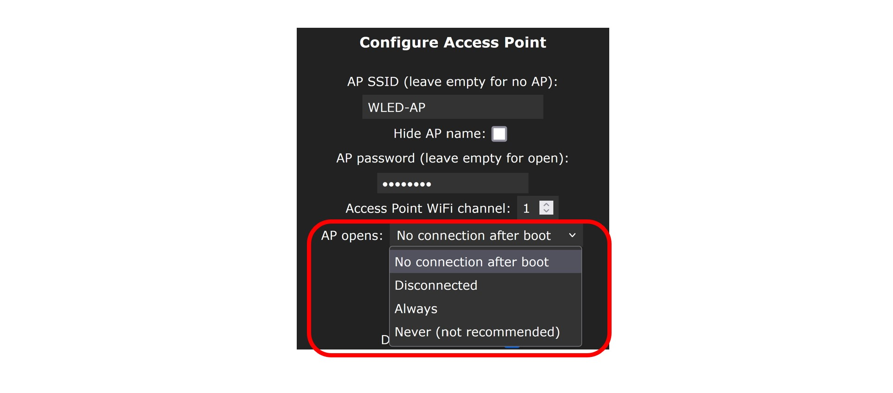
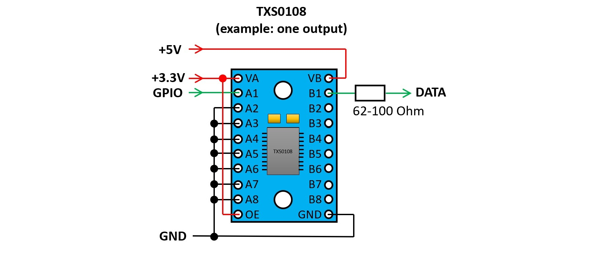
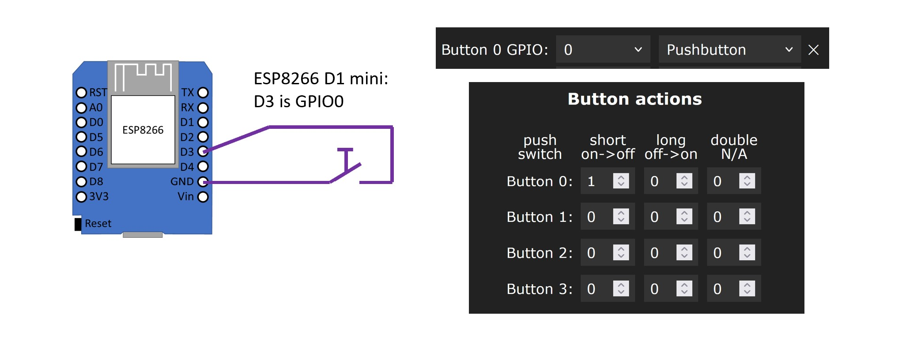
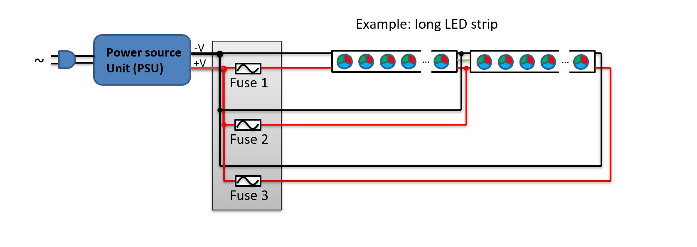
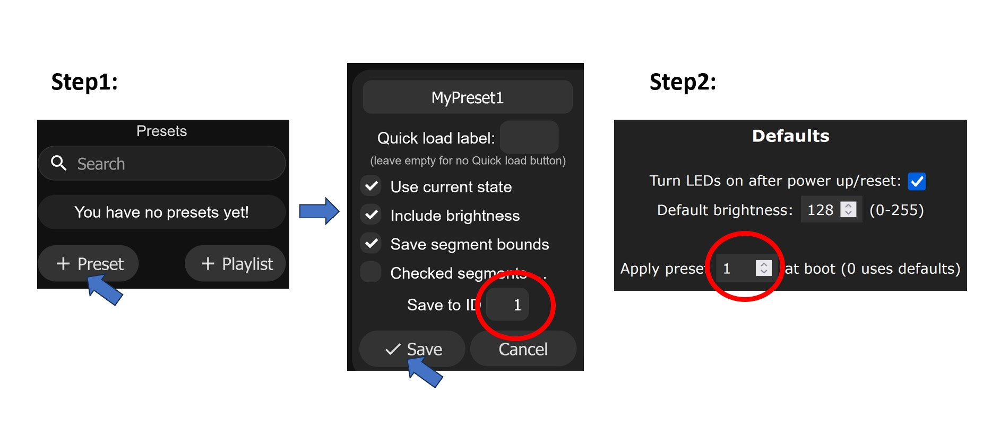

Найпоширенішими помилками є наступні:
1. Світлодіодна стрічка підключається зі зворотнього боку: адресні світлодіодні стрічки мають напрямок, вказаний маленькими стрілками на стрічці. Лінію даних потрібно підключати з того боку, де починається стрілка. .
.
2. Неправильне налаштування GPIO: Перевірте в налаштуваннях WLED, чи правильний номер GPIO встановлено для виведення даних. Готові до використання контролери зазвичай мають правильні налаштування, надруковані або на корпусі, або на друкованій платі.
3. Світлодіодні стрічки з великою кількістю світлодіодів підключені і налаштовані, але обмежувач струму все ще має значення за замовчуванням (850 мА). Це часто призводить до того, що світлодіоди коротко спалахують при зміні кольору, а потім відразу гаснуть або світяться дуже тьмяно. Перевірте і, за необхідності, відкоригуйте налаштування у WLED.
4. Встановлено неправильний тип світлодіодів. У налаштуваннях WLED необхідно встановити правильний тип світлодіодів і правильну послідовність кольорів (RGB, BGR тощо). Перевірте правильність цих налаштувань. Ви повинні знати тип світлодіода, але ви можете просто спробувати послідовність кольорів, щоб побачити, яка є правильною. Особливу увагу слід звернути на світлодіодну стрічку WS2814, яку в налаштуваннях потрібно встановити як SK6812.
5. Погана проводка. Підключення повинно бути виконано ретельно. Слід уникати нещільних контактів, з'єднань холодною пайкою тощо. З міркувань безпеки також потрібно бути уважним до правильного підбору розмірів кабелів.
Якщо програмне забезпечення WLED встановлюється на ваш контролер вперше і ви ще не ввели свої дані WiFi під час встановлення за допомогою веб-інсталятора, то контролер WLED створює точку доступу (WLAN) з назвою WLED-AP. Пароль для цього WiFi - wled1234.
Цей пароль можна змінити у розділі Конфігурація->Налаштування WiFi.
У початковому стані з налаштуваннями за замовчуванням, WLED SW намагається підключитися до обраного WiFi. Якщо це не вдається, WLED-AP створюється знову. Тож просто зачекайте, поки WLED-AP знову з'явиться. Однак цю поведінку можна змінити у налаштуваннях WLED. Наприклад, WLED-AP можна повністю заборонити. Якщо ви вже налаштували його таким чином, допоможе лише "жорстке скидання" або нове перепрошивання за допомогою WLED SW.

Однак є ще кілька речей, про які слід пам'ятати для правильного налаштування:
1. Для надійної передачі даних від контролера до світлодіодної стрічки потрібен стабілізатор рівня (це обов'язково, особливо для світлодіодних стрічок на 12 або 24 В). Потім вам доведеться щось спаяти або ви можете відразу купити професійний готовий WLED-контролер. Завдяки промисловому виробництву/збірці вони також значно надійніші, ніж будь-яка конструкція, зібрана вручну.
2. З міркувань безпеки необхідно враховувати правильну прокладку кабелів (довжину, переріз, контакти) і вбудовані запобіжники. Особливо зі світлодіодними стрічками все ускладнюється, оскільки вам потрібні так звані проміжні кабелі. Вони повинні бути правильно сплановані та реалізовані. В якості відправної точки можна використовувати WLED Калькулятор.
3. Світлодіодні стрічки можуть сильно нагріватися під час роботи і навіть перегріватися в разі несправності. Знову ж таки, з міркувань безпеки, ви повинні захистити простір навколо них: не слід просто так прокладати світлодіодні стрічки, в ідеалі ви повинні інтегрувати їх в алюмінієві профілі або щось подібне. У нормальному режимі роботи вони діють як тепловідвід і, таким чином, продовжують термін служби світлодіодів. У разі несправності вони можуть захистити навколишнє середовище.
4. Для економії енергії, коли світлодіоди вимкнені, ви можете інтегрувати реле, які повністю вимикають напругу світлодіодів.
Наразі (станом на літо 2023 року) повністю підтримуються лише мікроконтролери Espressif, типи ESP8266 та ESP32 (з двома ядрами). Деякі новіші типи, такі як ESP32-C3, ESP32-S2 та ESP32-S3, підтримуються експериментально, але їх продуктивне використання поки що не рекомендується, оскільки підозрюється наявність багатьох помилок. Крім того, встановити ці нові типи не так просто: існує кілька варіантів апаратного забезпечення/плат, для яких необхідно спеціально компілювати ПЗ. Слід також зазначити, що на ринку все ще продаються деякі плати ESP32-C3 (так звані C3 mini V1.0.0), на яких WLAN не працює належним чином.
Слід також зазначити, що Sound Reactive WLED наразі підтримує лише мікроконтролери ESP32. Останньою версією для ESP8266 була SR WLED версії 13.0-beta3.
Контролери на базі ESP8266 можуть керувати приблизно 600-650 світлодіодами. Контролери на базі ESP32 можуть керувати до 4,000 світлодіодів. Однак рекомендується розподіляти світлодіодні стрічки на кілька входів так, щоб до одного входу було підключено не більше 1000 світлодіодів: багато світлодіодів на одному виході призводить до падіння швидкості керування і швидкого прояву нерівномірностей. При використанні деяких протоколів передачі даних слід також враховувати, що вони можуть підтримувати лише обмежену кількість світлодіодів.
Багато світлодіодних стрічок на 5 В можуть працювати і без стабілізатора рівня, особливо якщо провід між контролером і світлодіодною стрічкою дуже короткий. Однак іноді може виникати мерехтіння, наприклад, світлодіоди короткочасно спалахують білим кольором. Можливі і більш серйозні збої. Зі світлодіодними стрічками на 12 або 24 В, як правило, неможливо обійтися без стабілізатора рівня. Однак для світлодіодних стрічок на 5 В, особливо в разі продуктивного використання, також рекомендується використовувати стабілізатор рівня, щоб забезпечити безперебійну роботу: стабілізатор рівня адаптує рівень сигналу мікроконтролера (3,3 В) до рівня сигналу світлодіодної стрічки (5 В для всіх адресних типів світлодіодів).
Професійні WLED-контролери завжди мають інтегрований стабілізатор рівня.
Управління адресними світлодіодними стрічками відбувається за допомогою керуючих сигналів, які мають базову частоту в діапазоні від 800 кГц до однозначного діапазону МГц (залежно від типу). Відповідно, щоб чисто передавати ці сигнали, шифратор повинен бути достатньо швидким. Тому рекомендуються швидкі типи, такі як SN74AHCT125, SN74AHCT32 або SN74LVC2T45. Типи типу SN74HCT (тобто без "A") трохи повільні і підходять для світлодіодів типу WS2812B, але можуть бути занадто повільними для деяких інших типів світлодіодів. У будь-якому випадку, не рекомендується використовувати готові двонаправлені перемикачі рівнів I2C, побудовані на транзисторах. При необхідності їх можна використовувати, але тоді слід замінити підтягуючий резистор на виході (зазвичай 10 кОм) на менший (<=1 кОм).
Перемикачі рівнів SN74AHCT125 підключаються між собою наступним чином:

Також можна використовувати TXS0108 LevelShifter. Невеликі друковані плати з цим перемикачем рівня часто продаються і можуть бути використані наступним чином:

У більшості випадків рекомендується резистор в діапазоні від 33 до 68 кОм. Стара рекомендація була 470 кОм, але з сьогоднішньої точки зору значення в цьому діапазоні не є нормальним. В принципі, робота без резистора також можлива, але при продуктивному використанні її слід уникати.
Відповідь залежить від того, що ви хочете з ним зробити. Для експериментів/випробувань достатньо мікроконтролерної плати ESP8266 або ESP32 без будь-яких додаткових компонентів. Якщо ви хочете зробити чисту установку, яка повинна працювати без проблем протягом тривалого періоду часу, вам дійсно не обійтися без готової професійної частини. Якісні, готові WLED-контролери не тільки інтегрують всі необхідні компоненти, вони також значно надійніші, ніж будь-які друковані плати, зібрані вручну, завдяки промисловому виробництву/збірці. Найгірша ідея - збирати все це за допомогою перемичок або чогось подібного: мало того, що нещільні контакти запрограмовані заздалегідь, ви також можете створити високий ризик для безпеки.
Так, для цього вам потрібен вільний цифровий вхід (GPIO) на контролері. Потім ви можете підключити кнопку між цим входом і заземленням (GND), наприклад, миттєву кнопку. Якщо ви натиснете на кнопку, цей GPIO буде з'єднаний із землею в цей момент, і контролер зареєструє це як клацання. Однак, щоб це сталося, кнопка повинна бути правильно налаштована у налаштуваннях WLED. Спочатку потрібно налаштувати кнопку. Для цього в розділі Config->LED Preferences ви повинні призначити номер GPIO, до якого підключена кнопка, на "Button" (наприклад, спочатку візьмемо "Button 1"). Ви також маєте визначити тип кнопки. Для миттєвої кнопки це буде "Кнопка". Потім ви можете встановити, що має відбуватися, коли кнопка натискається. Для цього перейдіть до Конфігурації->Час і макроси. Тут у розділі "Дії кнопок" ви можете визначити до трьох пресетів для кожної кнопки (введіть ідентифікатор пресета), які мають виконуватися при короткому, тривалому або подвійному натисканні кнопки (тому три стовпчики). Звичайно, пресети повинні бути створені заздалегідь. Для кнопки типу перемикач ви можете вказати, який пресет має викликатися при її вмиканні та вимиканні. Третій параметр (третій стовпчик) у цьому випадку не має жодного значення.

Програмне забезпечення WLED підтримує до 4 кнопок для контролерів на базі ESP32 і до 2 кнопок для контролерів на базі ESP8266. Для кожної кнопки потрібен власний вхід GPIO, і кожна кнопка може виконувати до трьох дій: при короткому натисканні, при довгому натисканні і при подвійному натисканні.
Так. Існує два типи датчиків:
1. З можливістю регулювання чутливості та часової затримки. Наприклад, тип HC-SR501. Ці датчики можна підключити до WLED і налаштувати як кнопку.
2. Без можливості регулювання чутливості та часової затримки. Наприклад, тип HC-SR602. Для них потрібно скомпілювати WLED з PIR-сенсором UserMod.
Так, є два варіанти:
1. Інфрачервоний пульт дистанційного керування (ІЧ). Для цього, однак, до контролера WLED повинен бути підключений інфрачервоний приймач. Рекомендовані типи: TSOP38238 або KY-022. Кожен з цих приймачів має три контакти: 3,3 В, GND та ІЧ-дані. Вивід ІЧ-даних повинен бути підключений до вільного виводу GPIO. Потім цей GPIO потрібно встановити як IR GPIO у розділі "Config->LED Preferences". Ви також повинні вибрати, який інфрачервоний пульт дистанційного керування у вас є. Доступні наступні типи: 24-клавішний RGB, 24-клавішний з CT, 40-клавішний синій, 44-клавішний RGB, 21-клавішний RGB, 6-клавішний чорний, 9-клавішний червоний, JSON пульт. Останній тип дає можливість використовувати будь-який пульт дистанційного керування. Для цього ІЧ-коди необхідно перерахувати в JSON-файл, а потім завантажити в WLED. .
.
2. Починаючи з версії WLED 14.0-beta3: ESP-NOW-сумісний пульт дистанційного керування, який використовує радіомережу. Прикладом цього є пульт дистанційного керування "WIZmote". Він базується на мікроконтролері ESP. ESP-NOW можна активувати в налаштуваннях WLED. Вам потрібно ввести апаратну MAC-адресу пульта дистанційного керування. Визначається натисканням на будь-яку кнопку на пульті і копіюванням останньої отриманої MAC-адреси з поля "Last Seen" у поле "Hardware MAC" у налаштуваннях WLED ESP-NOW ("Config->WiFi Setup") і збереженням її за допомогою кнопки "Save". Переваги: до контролера WLED не потрібно під'єднувати спеціальний приймач, сигнали передаються через радіомережу. Тому не потрібна пряма видимість між пультом дистанційного керування і WLED-контролером, як у випадку з інфрачервоним пультом дистанційного керування.
4 кнопки "1"-"4" пульта дистанційного керування WIZmote пов'язані з пресетами від 1 до 4. Значення інших кнопок не потребує пояснень. Увага: Для належної роботи WIZmote потрібні дві високоякісні батарейки типу AAA. Якщо батарейки занадто слабкі, правильний сигнал не буде надіслано, навіть якщо синій світлодіод на пульті дистанційного керування короткочасно загориться, фактично вказуючи на передачу сигналу.
Так, але це можливо лише за наявності контролера на базі ESP32 та додаткового обладнання. Тоді ви можете активувати Ethernet у розділі "Config->WiFi Setup", вибравши тип Ethernet-контролера або тип адаптера: ABC! WLED V43 та сумісні, ESP32-POE, ESP32Deux, KIT-VE тощо. Використовувана версія WLED повинна бути скомпільована з підтримкою Ethernet.
WLED має найбільший сенс з так званими цифровими, адресними світлодіодними стрічками, де ви можете керувати окремими світлодіодами окремо. Це дозволяє налаштувати безліч ефектів. Підтримуються такі типи: WS2801, WS2811, WS2812B, WS2813, WS2814, WS1815, SK6812, APA102, LPD8806, SK9822, TM1814, GS8208. Іноді на ринку з'являються нові типи, які мають сумісний протокол керування.
Однак WLED SW також підтримує так звані аналогові світлодіодні стрічки, де всіма світлодіодами можна керувати лише однаково. Ці типи потребують власного GPIO для кожного кольору. Існують монохромні стрічки CCT, RGB, RGBW і RGBCCT. Крім того, вам потрібен не тільки мікроконтролер, але в будь-якому випадку деякі додаткові компоненти, такі як MOSFET.
Для керування аналоговими світлодіодними стрічками потрібен не тільки мікроконтролер, але й деякі додаткові компоненти, такі як MOSFET.
Базова схема показана тут. Вам знадобиться один MOSFET і один GPIO на кожен колір. Слід зазначити, що MOSFET дуже швидко руйнуються в разі перевантаження. Щоб зменшити ризик пожежі та запобігти травмуванню людей, слід застосувати додаткові елементи схеми для захисту MOSFET від перегріву та перевантаження. Залежно від типу, запобіжники занадто повільні для цього! Ви також можете розглянути можливість використання самозахищених MOSFET.
Світлодіодні стрічки цього типу є RGBW стрічками, подібними до типу SK6812. Тому їх слід розглядати як тип SK6812 у налаштуваннях світлодіодів WLED. Крім того, у цих стрічках білий і зелений канали часто міняються місцями, тому в налаштуваннях WLED потрібно встановити "Swap W & G". Цей параметр доступний лише починаючи з версії WLED 0.14.0-beta1.
З одного боку, з цими типами світлодіодів безвідмовна робота зазвичай можлива лише за допомогою LevelShifter. З іншого боку, ці типи часто мають окремі світлодіоди, об'єднані в групи по 3 (на 12 В) або по 6 (на 24 В). Світлодіодами в групі неможливо керувати незалежно один від одного. Також говорять про логічний світлодіод, який фізично складається з 3 або 6 світлодіодів.
Більшість адресних типів світлодіодних стрічок потребують лише сигналу даних для керування. Частота керуючого сигналу для цих типів фіксована. Однак існують також адресні типи світлодіодів, які потребують тактового сигналу на додаток до сигналу даних. У цих типах тактовий сигнал передається від контролера до світлодіодних стрічок. У цьому випадку для керування потрібні два GPIO, які повинні бути правильно встановлені в налаштуваннях WLED. Перевага полягає в тому, що тактове керування забезпечує швидшу передачу даних від контролера до світлодіодних стрічок. З великою кількістю світлодіодів можна запускати швидші ефекти.
Лінії для передачі даних (даних і, зрештою, тактових сигналів) можуть мати дуже малий переріз, оскільки по них протікає дуже малий струм. Однак лінії для живлення (GND і 5В/12В/24В тощо) повинні бути належним чином розраховані. Для цього ви повинні мати достатні електричні знання. Калькулятор WLED можна використовувати як основу для проектування.
Для безпечної роботи кабелі та світлодіодні стрічки повинні бути захищені від перевантаження та короткого замикання. Однак для цього недостатньо просто встановити будь-який запобіжник. Запобіжник, наприклад, плавкий запобіжник, ефективний лише тоді, коли він правильно розрахований. Для цього ви повинні мати достатні електричні знання. Калькулятор WLED можна використовувати як основу для проектування.
Довга світлодіодна стрічка з великою кількістю світлодіодів може вимагати досить великої потужності. У цьому випадку струм не може подаватися в повному обсязі тільки на початку світлодіодної стрічки. Проблема полягає в тому, що через падіння напруги всередині стрічки на задні світлодіоди надходить занадто мало напруги, тому вони не світять з повною інтенсивністю або навіть спотворюють кольори. Тому може знадобитися подача живлення на світлодіодні стрічки зі зворотного боку або навіть додатково в одній або декількох точках між ними. Кількість необхідних ін'єкцій можна розрахувати за допомогою WLED-калькулятора.

Ні. Значення, вказане для запобіжника, є так званим номінальним значенням запобіжника. Його точне значення дещо відрізняється залежно від типу запобіжника. Для прикладу розглянемо типові автомобільні запобіжники. Вони часто використовуються в контролерах WLED, оскільки їхній діапазон напруги (до 32 В), придатність для постійного струму і великий вибір номінальних значень (від 1 А до 40 А) роблять їх особливо придатними для цього застосування. Ці запобіжники визначені стандартом ISO 8820-3 і тому завжди мають схожу поведінку, навіть якщо вони виробляються різними виробниками. Але будьте обережні: на різних торгових платформах часто можна знайти дешеві репліки, які взагалі не відповідають цій специфікації і тому іноді не працюють належним чином. Так, наприклад, автомобільний запобіжник на 10А повинен витримувати 110% номінального струму, тобто 11А, протягом щонайменше 100 годин. Він все ще витримуватиме 135% номінального струму (тобто 13,5 А) від 0,75 секунди до 600 секунд, перш ніж розплавиться і перерве струм. Він може витримувати вдвічі більший номінальний струм (20 А) протягом 5 с, принаймні протягом 0,15 с. І навіть в 6 разів більший номінальний струм (60 А) протягом 100 мс. Це справедливо для номінальної кімнатної температури, при інших температурах значення можуть бути іншими. Якщо, наприклад, запобіжник на 10 А витримує струм 20 А протягом 5 с, то інші компоненти, які він має захищати, також повинні витримувати цей струм і не згоріти за цей час.
Часто вважають, що достатньо використовувати будь-який запобіжник, і все буде безпечно. Ні в якому разі! Тільки правильно підібраний і розрахований запобіжник може вчасно перервати струм, який може призвести до пожежі в разі перевантаження або короткого замикання. Процедура вибору запобіжника та проводів виглядає наступним чином:
1. Ви визначаєте робочий струм, який повинен протікати через запобіжник. Це, наприклад, максимальний струм, який споживають світлодіоди.
2. Тепер ви вибираєте запобіжник, який має достатню пропускну здатність, щоб витримувати робочий струм протягом усього терміну служби, не розплавляючись передчасно.
3. Вибираєте з'єднувальні кабелі, затискачі тощо. Тут відіграють роль два аспекти:
a) Ці компоненти не повинні перегріватися при робочому струмі, але вони також повинні бути здатні витримувати всі струми до тих пір, поки запобіжник їх пропускає. Якщо, наприклад, автомобільний міні-запобіжник на 10 А був обраний для робочого струму 8 А, кабелі і т.д. повинні витримувати 11 А постійно, 13,5 А протягом щонайменше 600 с, 20 А протягом 5 секунд і навіть 60 А протягом 100 мс без загоряння.
б) З'єднувальні кабелі також не повинні спричиняти занадто високе падіння напруги. Тут важливий не тільки переріз кабелю, але і його довжина. Падіння напруги може бути причиною того, що вам доведеться вибрати значно більший переріз, хоча з точки зору пункту а) не такий великий переріз кабелю був би необхідний.
WLED Калькулятор є хорошою відправною точкою для таких розрахунків.
Особливо важливими є три вилки програмного забезпечення (ПЗ) WLED:
1. Оригінал: Aircoookie WLED. Це оригінальне ПЗ WLED. До версії 0.13.3 не було способу зробити Sound Reactive WLED, використовуючи цю версію. Починаючи з версії 0.14.0 доступний так званий Audio Reactive Usermod.
2. Sound Reactive WLED: ця гілка була створена кілька років тому і реалізує так званий Sound Reactive WLED. За допомогою мікрофона або лінійного входу можна змусити світлодіоди реагувати на музику (або інші шуми), а потім загорятися, наприклад, з музичними ударами.
3. MoonModules WLED: ця гілка є "ігровим майданчиком", створеним деякими розробниками WLED, в основному для випробування нових функцій або експериментальних змін існуючого коду.
За допомогою цього інсталятора WLED ви можете встановити і випробувати кожну версію.
В принципі, Usermod - це розширення, яке користувач/програміст може запрограмувати на додаток до основних функцій програмного забезпечення WLED. Для того, щоб мати можливість використовувати Usermod, він повинен бути скомпільований разом з програмним забезпеченням WLED. Офіційні випуски WLED не містять жодних Usermod'ів, неофіційні джерела, такі як WLED Installer, також пропонують попередньо скомпільовані версії WLED з деякими Usermod'ами. Однак у багатьох випадках це означає, що якщо ви хочете використовувати один або декілька юзермодів, вам доведеться скомпілювати програмне забезпечення WLED для них самостійно. Цей Помічник з компіляції WLED може бути корисним. Важливо також зазначити, що деякі користувацькі моди можуть бути застарілими і можуть працювати неправильно або взагалі не працювати з поточною версією WLED, оскільки користувацькі моди не були запрограмовані спільнотою WLED, а часто окремими користувачами/розробниками, і тому вони не підтримуються належним чином або не оновлюються.
Сегменти додають можливість розділити світлодіодну стрічку на віртуальні частини, щоб призначити кожній частині свій власний колір або ефект. Це дозволяє реалізувати різноманітні спецефекти. Наприклад, ви можете розділити світлодіодну стрічку на два сегменти і встановити другий сегмент як дзеркальний: таким чином ви можете створювати симетричні ефекти.
Починаючи з версії WLED 14.0, для ефектів відображаються додаткові символи. Вони вказують на певні можливості або особливості відповідного ефекту:
"Палітра": за допомогою цього ефекту можна встановити різні кольорові палітри.
"Матриця": ці ефекти є 2D-ефектами для світлодіодних матриць.
"Нота": цей ефект є аудіореактивним і реагує на гучність аудіосигналу.
"Подвійна нота": цей ефект є звуковим реактивним ефектом і реагує на частоти в аудіосигналі.
На жаль, не напряму. Інтерфейс WLED в браузері або додаток WLED працюють тільки в тому випадку, якщо контролер і ПК / смартфон знаходяться в одній локальній мережі. Безпечне пряме керування через Інтернет неможливе. Однак можна встановити систему домашньої автоматизації (вимагає спеціального обладнання), наприклад, Home Assistant або IoBroker. Вони мають можливість керувати WLED-контролерами і водночас надають можливість доступу до систем через Інтернет. Інший варіант - встановити VPN-з'єднання. Деякі сучасні роутери підтримують цю функцію. Тоді ви спочатку підключаєтеся до домашньої мережі через Інтернет (за допомогою захищеної технології VPN), а потім отримуєте доступ до WLED у звичайному режимі. Інший простий, але обмежений варіант - підключити контролер WLED до пристрою Alexa (наприклад, Amazon Echo), якщо він у вас є. Тоді ви зможете керувати контролером через додаток Alexa, але тільки змінювати стан увімкнення та вимкнення, а також яскравість. Звичайно, теоретично можна було б увімкнути прямий доступ з інтернету до WLED-контролера в роутері. Однак це вкрай небезпечно, оскільки дані ніяк не захищені, і будь-хто може керувати вашим контролером таким чином.
Так. У розділі "Голосовий помічник Alexa" в меню "Конфігурація->Інтерфейси синхронізації" потрібно поставити галочку "Емулювати пристрій Alexa:" і зберегти за допомогою кнопки "Зберегти". Після цього ви перезавантажуєте контролер, запускаєте пошук нових пристроїв у застосунку Alexa і налаштовуєте контролер як лампу. Щоправда, можливості керування дуже обмежені: вмикання та вимикання, зміна яскравості та виклик деяких пресетів.
Для цього необхідно зробити два кроки. По-перше, ви повинні створити пресет, який активує потрібний колір або ефект. По-друге, ви повинні ввести ідентифікатор створеного пресета в розділі Конфігурація -> Налаштування світлодіода в налаштуваннях "Застосовувати пресет ... при завантаженні", а потім натиснути на кнопку "Зберегти" внизу сторінки налаштувань.
Точно так само можна налаштувати відтворення цілого плейлиста при завантаженні. Для цього вам потрібно ввести ідентифікатор плейлиста у вищезгаданому налаштуванні замість ідентифікатора пресету.

"Мапування" - це можливість програмно змінювати порядок розташування окремих світлодіодів у стрічці. Зазвичай всі світлодіоди в стрічці з'єднані послідовно (по лінії даних): 1->2->3->4->.... Для деяких спеціальних ефектів або особливо для 2D матриць ви часто змінюєте порядок без необхідності паяти всю стрічку по-іншому. Наприклад, ви можете зробити так, щоб після кожних 3 світлодіодів порядок світлодіодів змінювався на протилежний, також за допомогою мапування, так, ніби логічний порядок світлодіодів у стрічці був таким: 1->2->3->6->5->4 ->7 ->8 ->9 ->12 ->11 ->10 і т.д.
Мапінг задається через JSON-файл, який повинен мати назву ledmap.json. Також потрібно підготувати спеціальний файл у форматі JSON. Для наведеного вище прикладу вміст цього файлу матиме такий вигляд {"map":[0,1,2,5,4,3,6,7,8,11,10,9]}. Зверніть увагу, що світлодіоди нумеруються, починаючи з 0. Також слід уникати використання зайвих пробілів. Ви можете опустити окремі позиції світлодіодів, вказавши на їх місці -1.
Також можна визначити декілька карт. Для кожної карти використовується окремий файл ledmapX.json, де X - це номер (1, 2 і т.д.). Яку мапу використовувати, можна вказати в пресеті за допомогою "ledmap":X,..., де X - номер мапи в JSON-файлі. У найпростішому випадку вміст пресета (команди API) виглядає так {"on":true,"ledmap":1}. Файл ledmap.json (навіть без номера), з іншого боку, застосовується не через пресет, а завжди автоматично під час запуску контролера. .
.
Створений файл ledmap.json (або файли ledmapX.json) необхідно завантажити в контролер WLED. Для цього відкрийте в браузері адресу http://
Пресет - це збережена конфігурація світлодіодного світла, яку ви можете згадати пізніше без необхідності встановлювати всі деталі знову. Наприклад, ви можете встановити сегменти для певного бажаного ефекту, визначити колір або ефект для кожного сегмента. Потім ви можете зберегти ці налаштування у вигляді пресетів і викликати їх знову і знову одним клацанням миші, коли вони вам знадобляться. Ви також можете встановити в налаштуваннях WLED, щоб певний пресет автоматично викликався при запуску контролера. Або ви можете підключити до контролера фізичну кнопку, а потім призначити їй пресет. Або в налаштуваннях WLED можна встановити, що пресет активується в певний час доби.
Деякі приклади пресетів показані нижче. Пресети можна створити, зафіксувавши поточний стан і зберігши його як пресет. Або ви можете описати пресет за допомогою API-команди. Існує два типи команд API: HTTP API або JSON API. Ви можете використовувати один або інший тип, хоча JSON API пропонує більше можливостей. Потім вам потрібно ввести ці API-команди в Preset у вікні "API-команда":
| HTTP API | JSON API | Опис |
|---|---|---|
| T=2 | {"on":"t"} | Він перемикається між увімкненим та вимкненим станом (перемикання). Тобто, коли світлодіоди вимкнені, вони вмикаються і навпаки. |
| T=1 | {"on":true} | Світлодіоди вмикаються (або нічого не змінюється, якщо вони були ввімкнені раніше) |
| T=0 | {"on": false} | Світлодіоди вимикаються (або без змін, якщо вони вже були увімкнені) |
| {"on":true,"tt":0} | Світлодіоди вмикаються, світлодіоди загоряються відразу без повільного згасання, незалежно від глобального налаштування "Перехід". | |
| A=128 | {"bri": 128} | Яскравість встановлено на 50%. Мінімальне значення - 0, максимальне значення (100%) - 255. Тому 128 означає яскравість 50% |
| A=~10 | {"bri":"~10"} | Яскравість збільшується на 10. Отже, якщо раніше було 100, то стане 110. |
| A=~-20 | {"bri":"~-10"} | Яскравість зменшується на 20. Тобто, якщо раніше вона була 100, то тепер буде 80. |
| R=255&G=0&B=0 | {"seg":[{"col": [[255,0,0]]}]} | Колір світлодіодів встановлено на червоний |
| R=0&G=255&B=0&A=128&FX=0 | {"seg":[{"fx":0,"col":[[0,255,0]]}],"bri": 128} | Колір світлодіодів встановлено на зелений, яскравість на 50% (значення 128) та ефект на суцільний (FX=0) |
| P1=1&P2=3&PL=~ | {"ps": "1~3~"} | Чергування між пресетами з ідентифікаторами від 1 до 3: при виклику викликається наступний пресет і так далі по циклу: 1->2->3->1->2->3->1->.... . |
Плейлист - це можливість відтворення цілої серії пресетів один за одним. Таким чином, на основі простих ефектів можна створювати ще більш складні ефекти. Для кожного пресета можна визначити час відтворення (тривалість) і час переходу до наступного пресета (перехід). Ви можете вибрати, чи повинен плейлист відтворюватися лише один раз або повторюватися безкінечно. Ви також можете встановити, щоб окремі пресети в списку відтворення відтворювалися не у визначеному порядку, а у випадковому порядку один за одним (шаффл).
WLED UDP Sync - це можливість керувати кількома WLED контролерами таким чином, щоб підключені світлодіодні стрічки на кожному контролері управлялися синхронно і абсолютно однаково, тобто завжди відтворювали один і той же колір або один і той же ефект, встановивши цей колір або ефект тільки на одному контролері. Ви також можете встановити, що саме потрібно синхронізувати: яскравість, колір, ефекти, сегменти тощо. Таким чином, кілька світлодіодних стрічок можуть показувати однакову гру кольорів, навіть якщо вони підключені до різних WLED-контролерів, наприклад, з причин фізичного розташування. Налаштування потрібно виконати в області "WLED-трансляція" в розділі "Конфігурація->Інтерфейси синхронізації". Можна визначити до 8 груп. Наприклад, ви призначаєте два контролери до однієї групи, а два інших - до іншої. Тоді перші два контролери синхронізуються між собою (група 1), а інші два між собою (група 2), але не групи 1 і 2 між собою. На головній сторінці інтерфейсу користувача WLED вгорі є кнопка "Sync", яка дозволяє вмикати та вимикати синхронізацію WLED. "UDP" у полі "WLED UDP Sync" означає, що ця синхронізація здійснюється через мережевий протокол UDP.
"Віртуальні світлодіоди" - це можливість керування двома або більше світлодіодними стрічками на різних контролерах як однією стрічкою. Наприклад, ви підключаєте одну світлодіодну стрічку до першого контролера WLED, а іншу світлодіодну стрічку до другого контролера WLED. Але ви хочете, щоб обома стрічками можна було керувати як однією стрічкою. Для цього спочатку потрібно налаштувати обидві стрічки на кожному контролері як зазвичай (тип світлодіода, кількість тощо). Потім ви додаєте віртуальну світлодіодну стрічку до першого контролера (як другу стрічку). Для цього перейдіть до "LED-виходів" у розділі "Конфігурація->Параметри світлодіодів", натисніть на символ "+" і виберіть "DDP RGB (мережа)" або "DDP RGBW (мережа)" як тип стрічки. Тут потрібно ввести початковий номер і кількість світлодіодів (на другій стрічці). Також потрібно ввести IP-адресу другого контролера. Таким чином, перший контролер буде керувати власною світлодіодною стрічкою, а також другою світлодіодною стрічкою через мережу, як єдиним цілим.
По суті, обидва варіанти означають можливість використання WLED-контролерів таким чином, щоб світлодіоди реагували на музику або інші шуми і вчасно загорялися. Однак оригінальне програмне забезпечення WLED не мало такої можливості, тому в той час було створено форк, в якому ця опція була додатково реалізована. Це програмне забезпечення WLED називається Sound Reactive WLED (SR WLED). Пізніше на основі Sound Reactive WLED було розроблено UserMod для оригінальної версії WLED, також з такою функціональністю. Цей UserMod називається AudioReactive (AR WLED). Для SR WLED і AR WLED вам потрібен WLED-контролер на базі ESP32. SR WLED також підтримував мікроконтролери ESP8266 до версії 0.13.0-beta3, але не більше.
Підтримуються три типи мікрофонів:
1.аналогові мікрофони. Прикладами є MAX4466 та MAX9814 (трохи кращі). Ці мікрофони прості у використанні: вам просто потрібно підключити 3,3 В, GND і аналоговий вихід мікрофона до входу АЦП (аналого-цифрового перетворювача) ESP8266 або ESP32. Однак великим недоліком є якість: як самих мікрофонів, так і АЦП, інтегрованих в мікроконтролери, які насправді не дуже добре підходять для обробки звуку. .
.
2. Цифрові мікрофони I2S. Прикладами є INMP441 та ICS-43434/ICS-43432. Вони мають вбудований АЦП і вже виводять цифровий сигнал. Перевагою є найкраща якість. Недоліки - вища складність (для цифрового сигналу потрібно декілька PIN-кодів) і підтримка лише контролерів на базі ESP32, але не в поєднанні з ESP8266, оскільки він не має інтерфейсу I2S.
3.PDM мікрофони. Прикладом може служити SPM1423. В принципі, це також цифрові мікрофони з вбудованим сигма-дельта АЦП. Вони трохи дешевші за I2S-мікрофони, вимагають на один PIN-код менше, а якість досить хороша. Крім того, для цього типу вам потрібен контролер на базі ESP32.
Потім у налаштуваннях WLED потрібно встановити правильний тип мікрофона і використовувані GPIO.
Так, є два варіанти:
1. Підготувати аналоговий лінійний вихід або сигнал з навушників за допомогою простої схеми і підключити його до входу АЦП з ESP8266 або ESP32. В цьому випадку все працює як з аналоговим мікрофоном. Якість тут теж не найкраща, оскільки АЦП ESP8266/ESP32 не дуже добре перетворює аудіосигнали, а схема формування сигналу дуже проста, але не дуже хороша. Крім того, чутливість може бути досить низькою, так що все це працює лише при високій гучності сигналу.
У деяких випадках можна обійтися без цієї схеми і підключити GND джерела звуку і аудіоканал (лівий або правий) безпосередньо до ESP (GND і аналоговий вхід, наприклад, вивід A0 на ESP8266 або GPIO36 на ESP32). Це рішення є досить брудним обхідним шляхом, і якість може бути як кращою, так і гіршою.
2. Перетворіть аналоговий лінійний сигнал або сигнал з навушників в цифровий сигнал I2S за допомогою спеціального аналого-i2s адаптера (на основі, наприклад, мікросхем CirrusLogic CS5343 або TI PCM1808 або es7243), а потім підключіть його до ESP32. В цьому випадку все працює так само, як і з цифровим I2S мікрофоном. Єдина відмінність від I2S-мікрофона полягає в тому, що вам потрібен додатковий PIN-код для сигналу MCLK (Master Clock), який може генеруватися ESP32 тільки на GPIO 0, 1 або 3. Інша складність полягає в тому, що MCLK - це високочастотний сигнал, і він повинен бути підключений дуже точно і мати короткі дроти. Для стабільності краще використовувати готовий контролер зі спеціальним адаптером Line-In до I2S. Перевагою є найкраща якість, хороша чутливість і найкраща звукова реакція користувача.